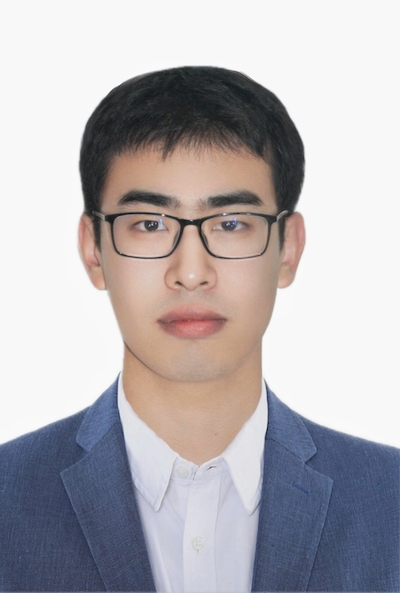

Professor, Doctoral Supervisor, CCF Senior Member, and IEEE Member
School of National Defence Science and Technology, Southwest University of Science and Technology, China, 2015-
Sichuan Civil-military Integration Institute, China, 2022-
Southwest Automation Research Institute, China, 2022-
School of Computer Science and Engineering, Nanjing University of Science and Technology, China, 2017-2021
Alibaba Group, China, 2014
Email: rzw@njust.edu.cn
Master Students
Female, Master (2023-, ), Supervised by Zhenwen Ren and Xiaojian You
School of National Defence Science and Technology, Southwest University of Science and Technology, Mianyang, China
Her current interests include deep learning and software development.
Email: N/A
Homepage: N/A
Achievements: N/A
Female, Master (2023-, ), Supervised by Zhenwen Ren
School of National Defence Science and Technology, Southwest University of Science and Technology, Mianyang, China
Her current interests include multi-view learning.
Email: N/A
Homepage: N/A
Achievements: N/A
Male, Master (2023-, ), Supervised by Zhenwen Ren and Xiaoqian Zhang
School of Information Engineering, Southwest University of Science and Technology, Mianyang, China
Her current interests include gesture recognition.
Email: N/A
Homepage: N/A
Achievements: N/A
Male, Master (2023-, ), Supervised by Zhenwen Ren
School of National Defence Science and Technology, Southwest University of Science and Technology, Mianyang, China
Her current interests include deep learning and software development.
Email: N/A
Homepage: N/A
Achievements: N/A
Male, Master (2023-, ), Supervised by Zhenwen Ren
School of National Defence Science and Technology, Southwest University of Science and Technology, Mianyang, China
Her current interests include deep learning and software development.
Email: N/A
Homepage: N/A
Achievements: N/A
Female, Master (2022-)
School of National Defence Science and Technology, Southwest University of Science and Technology, Mianyang, China
Her current interests include multiple kernel learning and multi-view clsutering.
Email: N/A
Homepage: N/A
Achievements: One paper has been accepted by IEEE/CAA Journal of Automatica Sinica. One paper has been accepted by IEEE Transactions on Consumer Electronics
Male, Master (2022-, ), Supervised by Xiaojian You and Zhenwen Ren
School of National Defence Science and Technology, Southwest University of Science and Technology, Mianyang, China
Her current interests include Model-Based Systems Engineering (MBSE).
Email: N/A
Homepage: N/A
Achievements: N/A

Male, Master (2022-, 非全日制定向培养, 长安集团)
School of National Defence Science and Technology, Southwest University of Science and Technology, Mianyang, China
Her current interests include automatic control and multi-view clsutering.
Email: N/A
Homepage: N/A
Achievements: N/A

Female, Master (2021-)
School of National Defence Science and Technology, Southwest University of Science and Technology, Mianyang, China
Her current interests include multiple kernel learning.
Email: 17865578937@163.com
Homepage: N/A
Achievements: One paper is peer-reviewing in Engineering Applications of Artificial Intelligence.

Female, Master (2021-)
School of National Defence Science and Technology, Southwest University of Science and Technology, Mianyang, China
Her current interests include multi-view clustering and deep learning.
Email:helenzhang98@foxmail.com
Homepage: N/A
Achievements: One paper has been accepted by Knowledge-Based Systems. One paper is peer-reviewing in Expert Systems with Applications.
Female, Master (2021-)
School of National Defence Science and Technology, Southwest University of Science and Technology, Mianyang, China
Her current interests include deep learning.
Email:
Homepage: N/A
Achievements: N/A

Male, Master (2020-2023, 非全日制定向培养, 绵阳交通发展集团)
School of Information Engineering, Southwest University of Science and Technology, Mianyang, China
His current interests include feature extration and clustering.
Email: liaoyinsong123@sina.com
Homepage: N/A
Achievements: One paper is peer-reviewing in Applied Intelligence. He has submited one Chinese patent.

Female, Master (2020-2023)
School of Information Engineering, Southwest University of Science and Technology, Mianyang, China
Her current interests include graph-based clustering.
Email: YJL1015004@163.com
Homepage: N/A
Achievements: She has submited two Chinese patents. One paper has been accepted by Applied Intelligence. One paper has been accepted by Information Sciences. One paper has been accepted by ACM MM 2022. One paper has been accepted by AAAI 2023. One paper has been accepted by IEEE Transactions on Neural Networks and Learning Systems. Some papers are peer-reviewing in IEEE Trans. journals.

Male, Master (2019-2022)
School of Information Engineering, Southwest University of Science and Technology, Mianyang, China
His current interests include pattern recognition, multi-view clustering, deep learning, and fault diagnosis.
Email: haoranli50@gmail.com
Homepage: N/A
Achievements: He has obtained the excellent graduate paper award in 2018. He has obtained the Miaozi Project of Sichuan Province. One paper has been accepted by Knowledge-Based Systems. One paper has been accepted by Knowledge-Based Systems. One paper has been accepted by JMLC. One paper has been accepted by IEEE Transactions on Circuits and Systems for Video Technology. Some papers are peer-reviewing in IEEE Trans. journals.

Male, Master (2019-2022)
School of Information Engineering, Southwest University of Science and Technology, Mianyang, China
His current interests include feature extration and clustering.
Email: my202043@163.com
Homepage: N/A
Achievements: He has obtained the Postgraduate Innovation Fund Project by Southwest University of Science and Technology. He has submited two Chinese patents. One paper has been accepted by Applied Intelligence. One paper has been accepted by NCAA. One paper has been accepted by Cognitive Computation. Some papers are peer-reviewing in Neurocomputing and Cognitive Computation. One paper has been accepted by Knowledge-Based Systems.
Male, Master (2018-2021)
School of Information Engineering, Southwest University of Science and Technology, Mianyang, China
His current interests include pattern recognition, subspace clustering, and multiple kernel learning.
Email: lixingfeng@njust.edu.cn
Homepage: https://lee-xingfeng.github.io/about/
Achievements: He has obtained the Excellent Master Graduation Project of SWUST (2021). One paper has been accepted by Computer Application. One paper has been accepted by Neurocomputing. One paper has been accepted by Information Sciences. One paper has been accepted by ACM MM 2022. One paper has been accepted by Pattern Recognition. One paper has been accepted by IEEE Transactions on Computational Social Systems. One paper has been accepted by IEEE Transactions on Circuits and Systems for Video Technology. One paper has been accepted by ACM MM. One paper has been accepted by Information Fusion.
Male, Master (2018-2021)
School of National Defence Science and Technology, Southwest University of Science and Technology, Mianyang, China
His current interests include hashing learning, image set classification and feature extration.
Email: sunyuan_work@163.com
Homepage: https://sunyuan-cs.github.io
Achievements: He has obtained 10+ student projects, 20+ competition awards, and 2 patents. One paper has been accepted by 2020 International Conference on Neural Computing for Advanced Applications. He has obtained the Excellent Master Graduation Project of SWUST (2021). He has obtained the Best Paper Award Finalist of NCAA 2020. One paper has been accepted by Neural Computing and Applications. One paper has been accepted by ACM MM 2022. One paper has been accepted by IEEE Transactions on Image Processing (TIP). One paper has been accepted by ACM MM. One paper has been accepted by Expert Systems With Applications. One paper has been accepted by IEEE Transactions on Multimedia.
Ph.D. Candidates and Teachers
Female, Teacher and Ph.D. candidate
She is a teacher at School of Information Engineering, Southwest University of Science and Technology, Mianyang, China
Her current interests include multi-view clustering.
Email: myy930@swust.edu.cn
Homepage: N/A
Achievements: One paper has beeb accepted by International Journal of Machine Learning and Cybernetics (JMLC). One paper has been accepted by China Automation Congress 2021. One paper has been accepted by IEEE ACCESS. One paper has been accepted by IEEE Transactions on Consumer Electronics. One paper has been accepted by Pattern Recognition.

Female, Teacher and Ph.D. candidate
She is a teacher at School of Information Engineering, Southwest University of Science and Technology, Mianyang, China
Her current interests include incomplete multi-view clustering.
Email: N/A
Homepage: N/A
Achievements: One paper has been accepted by Expert Systems with Applications. One paper is peer-reviewing in Information Sciences.
Female, Teacher and Ph.D. candidate
She is a teacher at School of Information Engineering, Southwest University of Science and Technology, Mianyang, China
Her current interests include deep multi-view clustering.
Email: N/A
Homepage: N/A
Achievements: One paper has been accepted by IEEE Access. One paper has been accepted by Expert Systems with Applications.
Graduate Students
游佳莉，2020级硕士，电子科技大学读博 (导师:任福继院士)
廖银松，2020级硕士，绵阳交通发展集团
糜 勇，2019级硕士，西南交通大学读博 (导师:陈红梅教授)
李浩然，2019级硕士，中山大学读博 (导师:郭裕兰教授)
孙 元，2018级硕士，四川大学读博 (导师:彭德中教授)
李杏峰，2018级硕士，南京理工大学读博 (导师:孙权森教授)
程永航，2019级本科，中国兵器装备集团58所
韩迟玉，2019级本科，合肥工业大学(保送)
薛 爽，2019级本科，中国科学院西安光学精密机械研究所(保送)
赫培峥，2019级本科，中国科学院大学
乔国泰，2019级本科，国防科技大学(保送)
舒青山，2019级本科，西南交通大学(保送)
王琦源，2018级本科，电子科技大学读研(保送)
伍 淼，2018级本科，西南交通大学读研(保送)
雷皓云，2017级本科，电子科技大学读研(保送)
邓小川，2017级本科，西南科技大学读研
陈俊宇，2017级本科，华侨大学读研
吴明娜，2016级本科，中国科学技术大学读研(保送)
廉雪峰，2016级本科，顺丰研发中心
隆金岑，2016级本科，腾讯
韦子卿，2015级本科，腾讯
李钦源，2015级本科，西南科技大学读研
黄乙轩，2015级本科，上海智桦
李浩然，2015级本科，西南科技大学读研
李 凯，2014级本科，ASM科技
何 伟，2014级本科，ASM科技